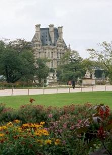
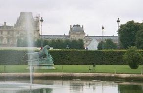
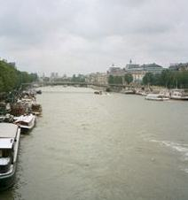
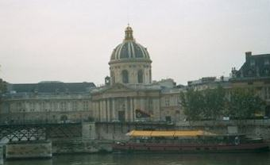
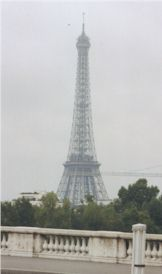
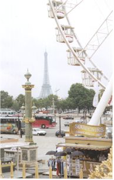
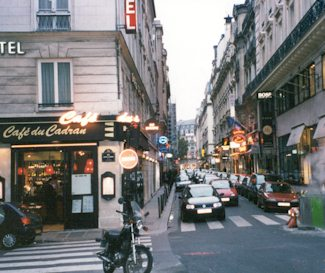

An art museum - Musée d'Orsay - as seen from a park near our hotel.

An arch just outside the Louvre.

Both of these shots are of the Louvre from that same park.


One more shot of the Louvre and the ugly glass pyramid.

OK - Once again I display my juvenile sense of humor with this picture. I saw this statue and thought, "I don't blame him, I'd cry too!"

I don't know the story on this sculpture, but I thought it was spooky.

This is one of the fountains in the middle of the Place de la Concorde.

Here's a view of the Seine - city rivers are never all that pretty.

We came across a very neat car show at the Place Vendome. Cool!

The column in the middle of the Place Vendome. Tour guide quote, "It's stone core is entwined in a sprial made from the bronze from 1200 cannons captured at the Battle of Austerlitz and is decorated with military scenes. It is topped by a statue of Napoleon as Caesar."

Neat building and fence. They paint a lot of things gold there. I think this may be part of the police headquarters, but I am not sure.

Neat buildings, don't remember what they were.



I think both of these shots are of parts of the Louvre. It's a very beautiful building.


Shots of the Eiffel Tower from around Place Vendome

The Church of St. Mary Magdalen

Shot of a typical Paris street